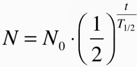
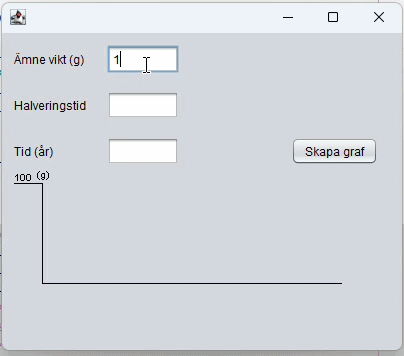

Halveringstids graf
Processen för att skapa programmet:
- Först tänkte vi ut hur vi skulle matematiskt räkna ut det. Då använde vi formeln

Vi tänkte att vi skulle räkna ut ett y värde för varje x värde med hälp av formeln. Sen skulle vi lägga in dom i en arraylist och sedan rita ut dom.
- Sedan skapade vi filen för projektet och lade till en JFrame och en JPanel. I JPanel lade vi till texterna, textfälten och knappen.
- Efter det skapade vi själva grafen med hjälp av draw i java. För att räkna ut x- och y-värdena på grafen använde vi oss av en for-loop med halverings-formeln i.
- När vi hade räknat ut y-värdena så lade vi till dom i en arraylist. Arraylisten lade vi sedan i en annan loop i paintComponent-metoden för att rita ut alla pixlarna i grafen.
- Till sist begränsade vi x- och y-värdena på ekvationen för att den inte skulle hamna utanför grafens ruta.

Hur man använder programmet:
- Du skriver in vikten av ämnet du har, halveringstiden för ämnet och tiden som du vill se halveringsgrafen för.
- Klicka på knappen "Skapa graf"